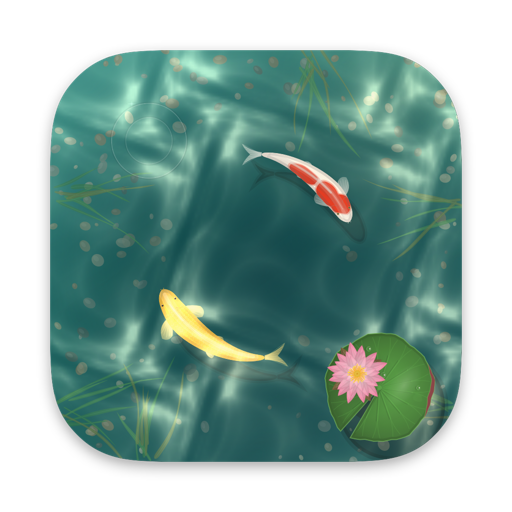

小鱼塘 · Little Pond
住在桌面上的一方鱼塘，会随今天的天气和时间变化。
A pond that lives on your Mac desktop and changes with today’s weather.
今日の天気で移り変わる池が、あなたのデスクトップに。
住在桌面上的一方魚塘，會隨今天的天氣和時間變化。

住在桌面上的一方鱼塘，会随今天的天气和时间变化。
A pond that lives on your Mac desktop and changes with today’s weather.
今日の天気で移り変わる池が、あなたのデスクトップに。
住在桌面上的一方魚塘，會隨今天的天氣和時間變化。